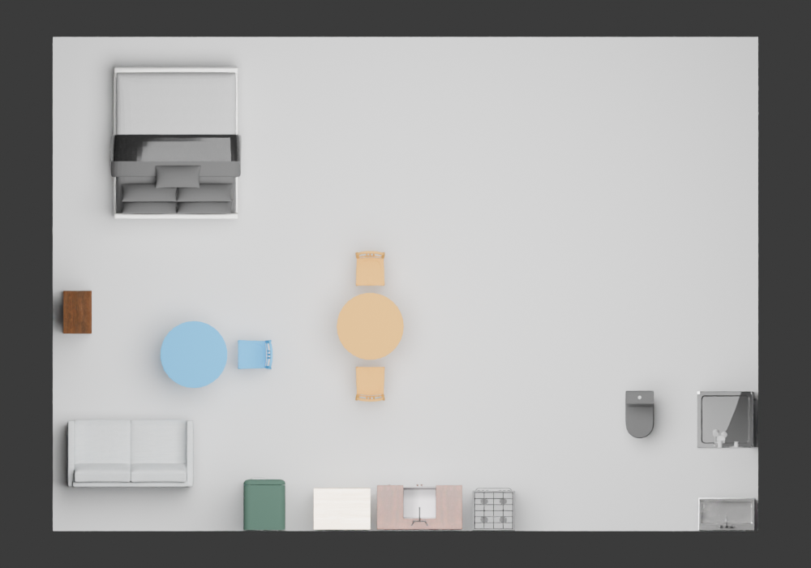
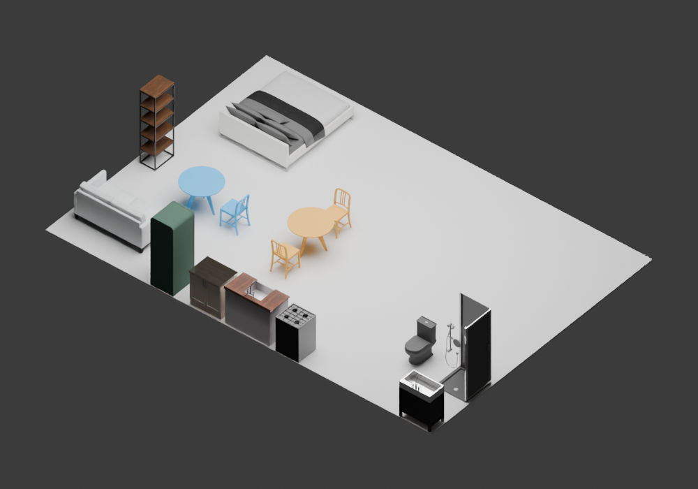

在Milan研究迁移输入中，原13件真实HSSD家具及17个建筑对象保持逐值不变，新增一组桌椅承担独立工作区。最终15件真实网格家具、32个原生对象。没有模型、训练或付费API调用。
| 条件 | 家具实例 | 原实例保留 | 原14角色接近点（各宽度） | 独立工作几何 | 网格相交 |
|---|---|---|---|---|---|
| 原始完整输入 | 13 | 13/13 | 14/14，14/14，14/14 | 未提供；共享办公可能性未判否 | 0 |
| 普通联合搜索 | 15 | 13/13且原姿态精确未变 | 14/14，14/14，14/14 | 已验证代理见证 | 0家具对、0结构对 |
实际生成并便宜筛查1976个候选，557个通过保守包围盒筛查，完整验证6个后采纳173号。主循环含原数值评价器耗时32.181秒，峰值RSS约2.679GiB。原71个资源哈希全部恢复匹配；完整GLB约23.9MB，61个几何节点回读通过。
本求解器使用开发期形式化任务与检查参数，原始文字到这些参数的映射尚未自动完成。这是现有整屋的增量构造及所测条件通过，不是可部署的新描述完整生成，也不是Agent效果或CVPR创新证明。人体使用、人体工学、真实材料占用、隐私、光声及安装未验证，full_scene_success保持unknown。两视图的蓝色为新增工作桌椅、橙色为原有用餐组，仅作诊断高亮；结构在预览中隐藏，原生资源和GLB均保留。


前5个被完整检查的候选都未检出相交，却挡住了沙发/书架或冰箱的声明接近点。普通功能检查已能拒绝它们，第6个保留全部原接近点；这不是新Critic的独立贡献。六候选同属一个房间，不能当六个独立场景。
本轮使用了公开开发检查参数和结构化角色；旧七调用模型的输入、工具权限及停止条件不同。详见资格说明。今后的所有方法必须共享同样信息和动作范围。普通搜索只增加两个对象，不能拿它直接对比可自由移动/删除的Agent。
当前给出的是普通CSP完整见证。Function2Scene已有功能解析及工具修复，FuncRoom-Agent v2已有递归构造、SFT与阶段GRPO。这里尚未实现或证明一个超出普通匹配、检索和搜索的学习机制，不因成功补全就启动新训练。
清理仅删除了3份旧重复导出/影子副本，保留相同内容原件、逐步记录及恢复路径，实际释放约51.1MB。没有删除模型权重或独有研究证据。当前数据盘空闲约5.036GiB，保留5GiB余量。
完整场景补全的普通参考求解器与下一步理论边界（Milan，2026-11-11） 一、本轮实际完成 已恢复71个原资源文件，全部旧SHA及大小匹配，原生HouseScene/RoomScene30个对象状态逐值一致。 保留13件原始真实HSSD家具及17个建筑对象，实际通过原生对象库增加一张桌和一把椅子，最终32个对象、15件家具。 这不同于只移动现有物体：新增实例来自冻结的同一16类资产库，保留源资产身份、真实三角形、尺寸与所有原始对象。 增加原生对象不是官方HTTP工具调用。没有新模型调用、训练、付费API或从空房的原生生成。 二、普通算法已经足够解决什么 从公共结构化任务与资产类别建立工作面/坐席角色，按真实三角形顶面检查40x30cm材料区。 匹配2个桌子模板与1个椅子模板，现有用餐高度的桌子优先于低茶几；这是一条普通设计启发，不是人类偏好标签。 在0.5m格点、四个朝向上枚举1976个联合候选，保守边界/包围盒筛出557个。 按当前沙发距离等固定规则排序，最多验证12个；第6个通过所有声明条件后停止，无质量重跑。 完整验证包含原14角色接近点的3种方形身体宽度、工作坐席侧/后接近、实际三角形相交、独立材料区及声明视线。 只有最终候选被实例化到原生场景；不能把1976个算成1976个生成场景，也不能把6次假设终态验证算独立房间。 三、真实执行给出的机制证据 进入完整验证的前5个候选都没有检出网格相交，却挡住了沙发/书架或冰箱的声明接近点；最后一个才全部保留。 所以当前材料确实出现了“物体几何不相交，但破坏既有用途接近条件”的区分。 这项区分已由普通用途检查和联合搜索解决，不支持再为同一可计算代理训练一个更慢的Critic。 14个原始接近点均通过、独立工作几何通过、15条声明视线清楚，不等于人体使用、工作舒适、隐私或真实材料占用全部验证。 声明点在保守网格中被阻挡，也不是任何人都无法使用该家具的证明。五个候选都来自同一房间，不能估计失败普遍性。 四、共同方法接口与理论 把角色/资产绑定记为z，坐标记为x，原始任务为u，几何/资产为G。普通后端已能求一个见证：C(u,G,z,x)=true。 本轮z由公共任务字段、资产名与普通规则形成，不是学习到的设计解释。C包含研究者公开定义的可计算代理，不包含全部人类用途真值T。 因此这是使用开发期形式化任务的参考解；原始文字到这些角色/检查参数的映射尚未自动完成，不能称可部署的原始文字生成基线。 C为真不能推出T为真。此处可用于训练的至多是带作用范围的执行/代理标签，不是完整场景偏好或专业设计正例。 求解器在有限预算内未找到见证，也不能直接推出该绑定不可行。若训练成功概率，应条件于搜索器和预算，不能把超时/未找到写成永久不可能。 若未来模型只提出相同z，再调用相同求解器，改善来自什么必须与普通规则、代码感知检索及同信息通用Agent分开测；这不是因为加了D或记忆就自动有新算法。 在没有独立空间选择/用途绑定收益之前，不启动LoRA/GRPO。已有模型的Task/Memory、标注视图和工具协议也必须先满足，不能用自定义JSON失败替代原生能力上限。 五、最近邻与训练目标 PlanIT已有关系图与神经引导实例化；Function2Scene已有用途/人群解析、功能约束和工具修复；FuncRoom-Agent v2已有递归可执行构造、条件SFT和阶段GRPO。 本轮复核FuncRoom最新版本仍为2026-09-17的v2，并读了既有完整补充审阅，不把v1页面或重复阅读包装成新的查新成果。 FuncRoom阶段内共同减父状态分在相同组标准化条件下没有新优势；该事实与势函数边界此前已有推导，不在本轮重新命名。 目前可研究的剩余位置是原始用途如何正确落到资产/角色/约束上，并在完整执行中保持要求；但普通匹配、解析和约束求解均是必须比较的强对照。 这只是剩余研究位置，不是已经证实的创新，也不代表另一篇功能生成论文没有覆盖。缺少真实残余错误时不应为了训练制造错误。 六、公平性和范围 本轮算法可读开发检查器的14个接近点、阈值和资产角色；旧模型运行的输入及权限不同，所以不能把32秒与旧7调用直接作优越性结论。 后续所有条件必须获得同样公开信息、资产、可改动作和验证接口。当前add-only普通方法不能去和可自由改整屋的Agent混成同权比较。 采用独立工作桌椅只是找到的充分解，未否定共享较大桌面等其他组织。没有自动原始自然语言解析、独立人类偏好或跨项目泛化。 该输入是10x7m研究迁移房间，不是建筑师原住宅测绘；旧源manifest的independent_test=true是当时分配，本轮已暴露，按开发材料处理。 本轮成功是“完整声明场景的增量构造及所测几何/功能代理通过”，full_scene_success仍为null，CVPR目标未完成。